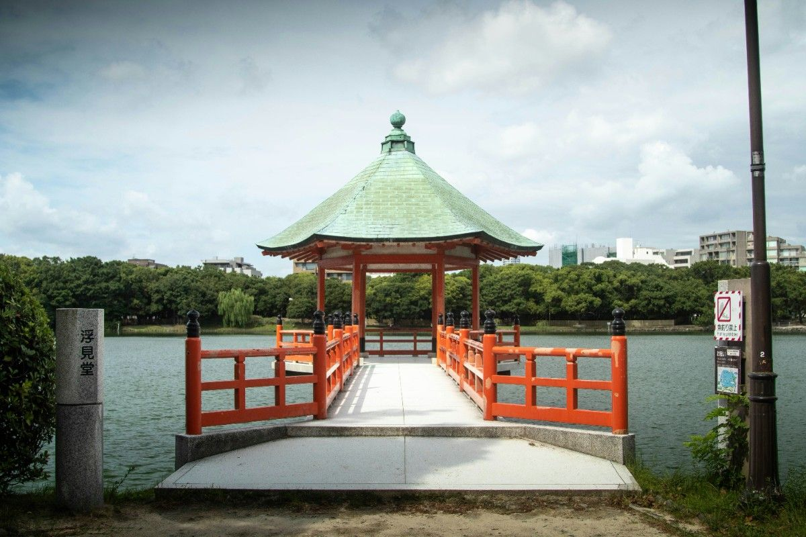
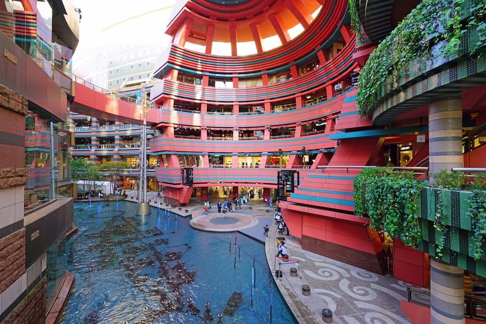
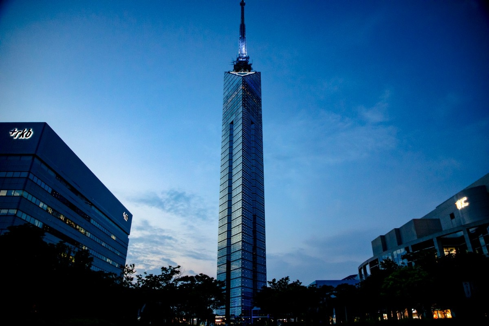

A modern coastal city known for foood and relaxed lifestyle.
Fukuoka is one of Japan’s most livable cities, offering a perfect balance between urban convenience and natural comfort. It is modern, clean, and well-organized, yet not as overwhelming as Tokyo. The city is known for its riverside views, parks, and food stalls called “yatai,” which create a warm and social atmosphere at night. Fukuoka feels open and breathable, making it easy to adjust to daily life.



Balanced, modern, comfortable
Fukuoka is great for people who want a balanced lifestyle. It provides city-level development without extreme crowding, making it ideal for both work and study.